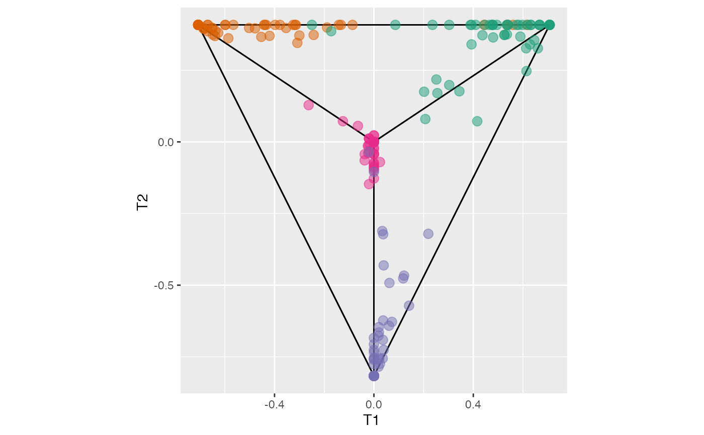

Data structure with the projected and boundary by node and class.
Source:R/ternary_str.R
ternary_str.RdData structure with the projected and boundary by node and class.
Examples
#crab data set with all the observations used as training
pprf.crab <- PPforest(data = crab, std =TRUE, class = "Type",
size.tr = 1, m = 100, size.p = .5, PPmethod = 'LDA')
require(dplyr)
#> Loading required package: dplyr
#>
#> Attaching package: ‘dplyr’
#> The following objects are masked from ‘package:stats’:
#>
#> filter, lag
#> The following objects are masked from ‘package:base’:
#>
#> intersect, setdiff, setequal, union
pl_ter <- function(dat, dx, dy ){
p1 <- dat[[1]] %>% dplyr::filter(pair %in% paste(dx, dy, sep = "-") ) %>%
dplyr::select(Class, x, y) %>%
ggplot2::ggplot(ggplot2::aes(x, y, color = Class)) +
ggplot2::geom_segment(data = dat[[2]], ggplot2::aes(x = x1, xend = x2,
y = y1, yend = y2), color = "black" ) +
ggplot2::geom_point(size = I(3), alpha = .5) +
ggplot2::labs(y = " ", x = " ") +
ggplot2::theme(legend.position = "none", aspect.ratio = 1) +
ggplot2::scale_colour_brewer(type = "qual", palette = "Dark2") +
ggplot2::labs(x = paste0("T", dx, " "), y = paste0("T", dy, " ")) +
ggplot2::theme(aspect.ratio = 1)
p1
}
#ternary plot in tree different selected dierections
pl_ter(ternary_str(pprf.crab, id = c(1, 2, 3), sp = 3, dx = 1, dy = 2), 1, 2 )
#> Warning: `select_()` was deprecated in dplyr 0.7.0.
#> ℹ Please use `select()` instead.
#> ℹ The deprecated feature was likely used in the PPforest package.
#> Please report the issue to the authors.
